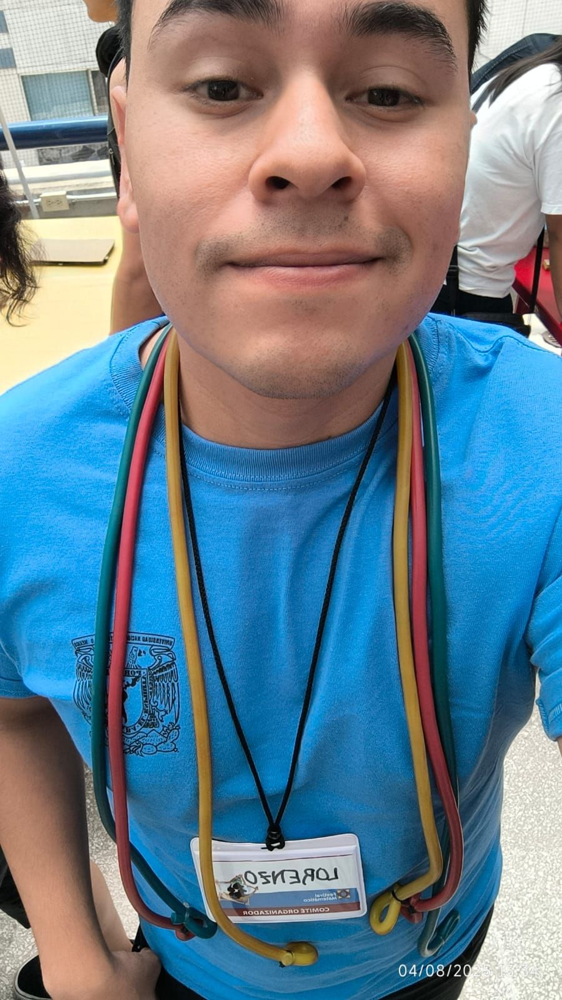
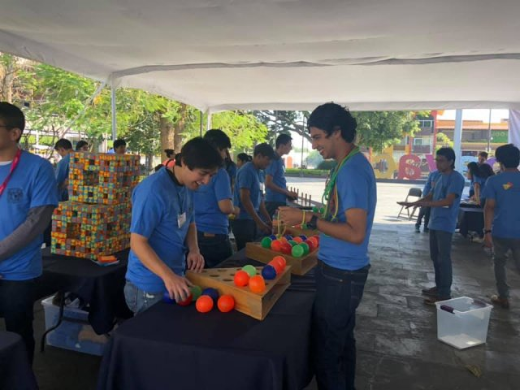
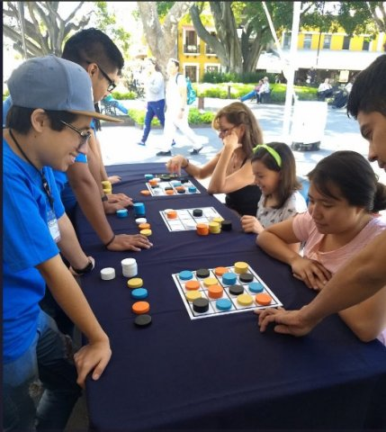
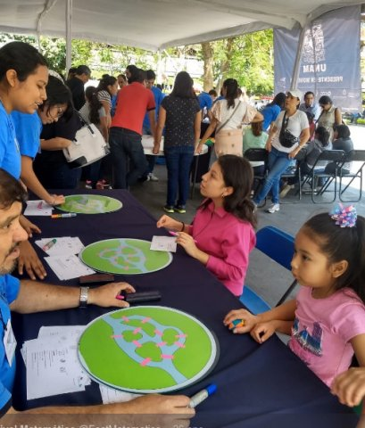
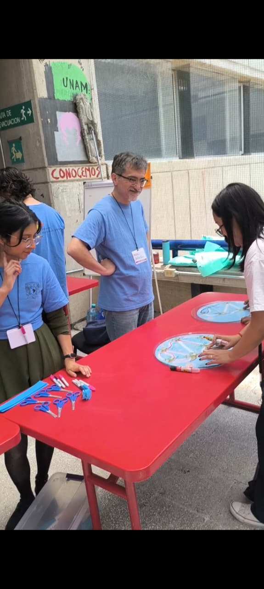
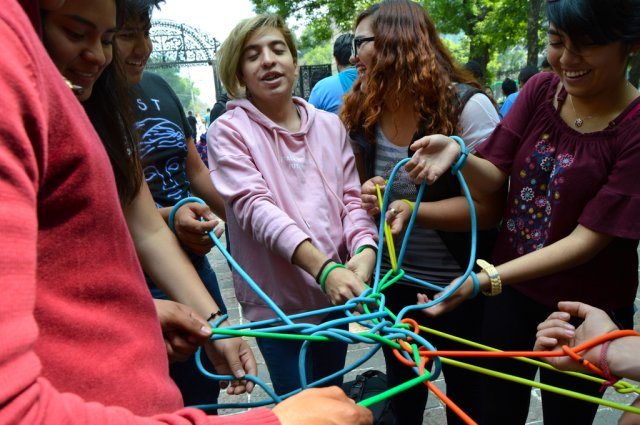
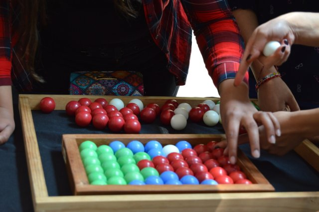

I am an active member of the Festival Matemático outreach group, a science communication project of the Institute of Mathematics at UNAM. Our goal is to bring contemporary mathematics closer to society through interactive and inclusive activities.
The Festival is organized by academics, students, and community service participants. We spend several months conducting a seminar to design and test new proposals. As the festival approaches, volunteers (students and professors) are recruited and trained to lead the events.
The project is designed to take place in public spaces and offers free activities so that anyone, regardless of age or educational background, can participate. These initiatives link various branches of mathematics to everyday life. The following section describes the specific activities and events in which we have participated with the Festival.







Official website: https://festival.matem.unam.mx/